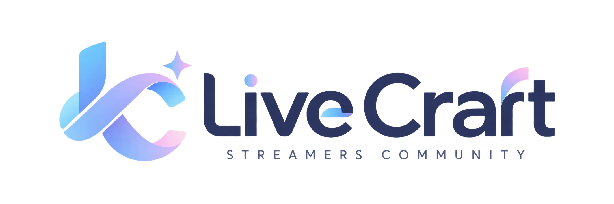

✷ THE PLACE TO CREATE YOUR NEXTLIVE CRAFT / 2026
HELLO, CREATORS!✳ MAKE IT YOURS
配信を、
もっと良いものへ。
個性が出会えば、可能性がひろがる。
学び合い、磨き合い、好きな配信をもっと自由に。
Live Craftは、配信者のためのコミュニティです。
募集準備中/審査・面談制/配信ノルマなし
LIVE CRAFT CREATOR STUDIONO. 001 / 2026

GOOD IDEAS
GROW TOGETHER.↗
GROW TOGETHER.↗
✺ONE
COMMUNITY
COMMUNITY
YOUR
STREAM,
YOUR COLOR. ✳
STREAM,
YOUR COLOR. ✳
SCROLL TO EXPLORE ↓EVERY VOICE MAKES A DIFFERENCE.
OUR PHILOSOPHY
成長の形は、
一つじゃない。
配信の面白さも、理想の形も、人それぞれ。Live Craftは誰かのやり方に合わせる場所ではありません。それぞれの個性を活かしながら、より良い配信に向かうための場所です。
01 / LEARN
学び合う
機材・配信技術・企画の工夫など、経験を持ち寄り、新しい発見を生み出す。
02 / CREATE
つくり合う
新しい企画やコラボを通じて、一人ではできなかった挑戦を形にする。
03 / RESPECT
尊重し合う
互いのスタイルを認め、フィードバックも参加も本人の意思を大切にする。
WHAT WE DO
配信を磨く、
4つのアクティビティ。
参加を強制する活動はありません。興味や今の課題に合わせて、自由に関わることができます。
配信研究会
OBS、音声、企画、トークなどテーマを決めて学び合います。
フィードバック
希望者が配信を振り返り、良い点や改善案を共有します。
コラボ・企画
ジャンルを越えてアイデアを出し合い、新しい表現に挑戦します。
交流・情報共有
Discordで気軽に相談し、ノウハウを積み重ねます。
SCHEDULE BASED LIVE NOW
いまの配信予定。
次の配信予定
※LIVE表示は予定時刻に基づいています。実際の配信状態は確認していません。
✧YOUR COLOR / 01
✳YOUR COLOR / 02
✦YOUR COLOR / 03
MEMBER PROFILES / 公開準備中
FEATURED PROJECTS / TOGETHER WE CREATE
個性が交わる、
新しいプロジェクト。
公開に同意された、メンバーの共同活動や企画を紹介します。
LATEST NEWS / UPDATES
Live Craftの、今。
✦
最新のお知らせは準備中です。
募集や活動のニュースをこちらでご案内します。
PICK UP VIDEOS
おすすめの配信・動画。
UPCOMING EVENTS